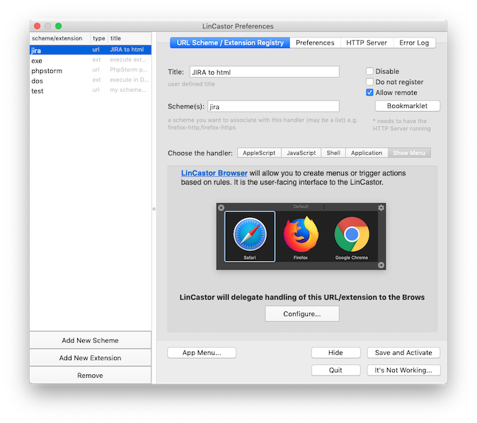
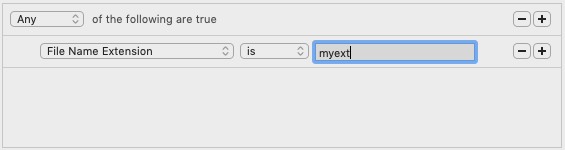

LinCastor Browser will handle http or https out of the box. However, the app itself is flexible enough to handle other type of links or even files.
Due to sandbox restrictions, Apple app store apps are not allowed to register custom URL scheme on its own. Helper app needs to be used to do it on its behalf.
This is where LinCastor comes to help. LinCastor is actually older, more “geeky” brother of LinCastor Browser. It enables you to register your own custom URL scheme (e.g. mylink://foo/bar) and associate it with an application, shell, or AppleScript handler. It will also handle file extensions.
Register Custom URL Scheme
Download and Install LinCastor helper app. Launch LinCastor and create new scheme or extension using its user interface. Choose “Show Menu” as handler. This will pass URL with this scheme directly to LinCastor Browser.

Remember to Save and Activate.
Handle the URL in LinCastor Browser
LinCastor will pass the URL directly to LinCastor Browser, so can configure it the same way as you would with standard HTTP link. Browser menu to select app to open the URL with or Single App to associate the URL with specific app. The matching rule would most likely look for your custom scheme, but you can combine it with other rules as well.

Handling File Extensions
The file extensions works exactly the same way as custom URL schemes. You registered them in LinCastor and pass them to LinCastor Browser for further processing.

LinCastor Browser includes File Name Extension to make matching agains file extensions super easy.
Other Ways to Do It
Alternative to using LinCastor is to make LinCastor Browser default app for given file or URL (usually for known types/schemes) using Get Info in Finder.